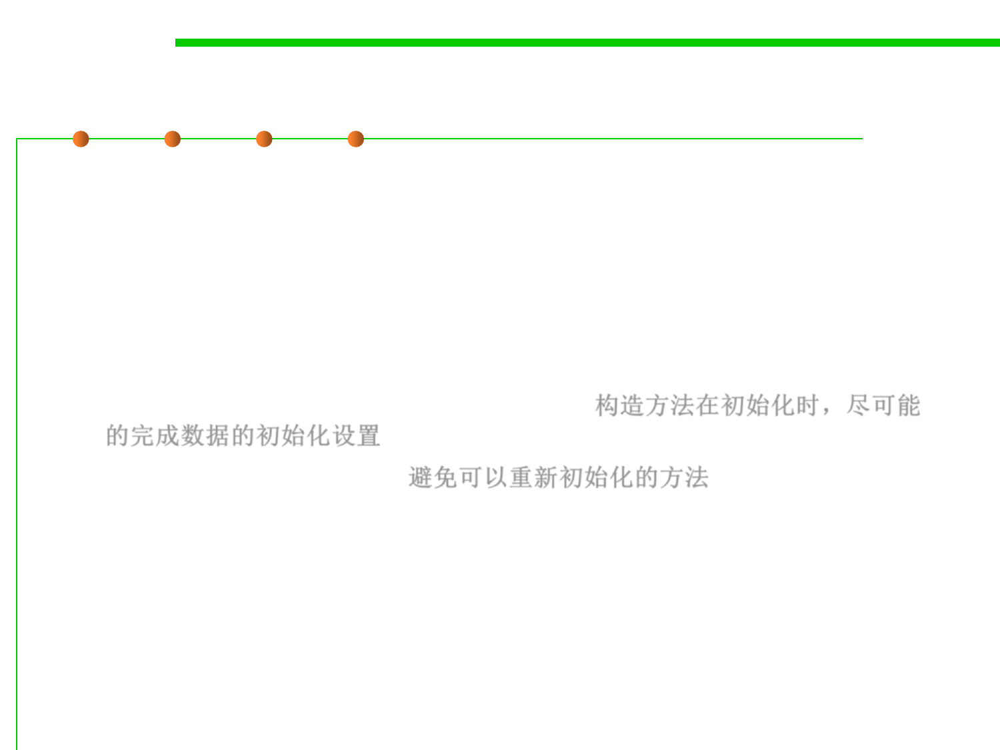

3.4 Object-Oriented Programming (OOP)
When to make classes mutable
▪ Class represents entity whose state changes
– Real-world - BankAccount, TrafficLight
– Abstract - Iterator, Matcher, Collection
– Process classes - Thread, Timer
▪ If class must be mutable, minimize mutability
– Constructors should fully initialize instance 构造方法在初始化时，尽可能
的完成数据的初始化设置
– Avoid reinitialize methods 避免可以重新初始化的方法